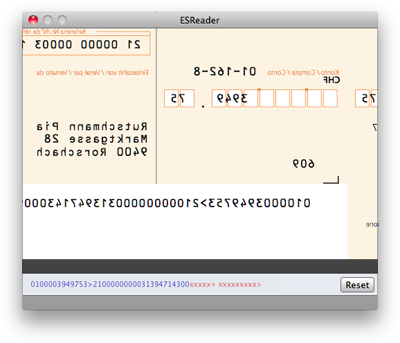
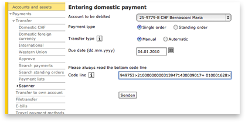

ESReader
Annoyed having to enter all the payment details on your e-banking website in order to pay deposit slips?
ESReader is a tool to read the ESR codes from deposit slips by holding them in front of the iSight camera. The ESReader copies the code to the clipboard from which it can easily be pasted to your e-banking website.
Usage Instructions
-

Scan the ESR codeHold the deposit slip in front of the camera, such that parts of the ESR code are readable in the camera preview. The detected code is shown at the bottom of the window. Recently detected parts are displayed in blue color.
-

Paste it from clipboardOnce the complete code has been detected, simply go to your e-banking website and paste it from the clipboard.